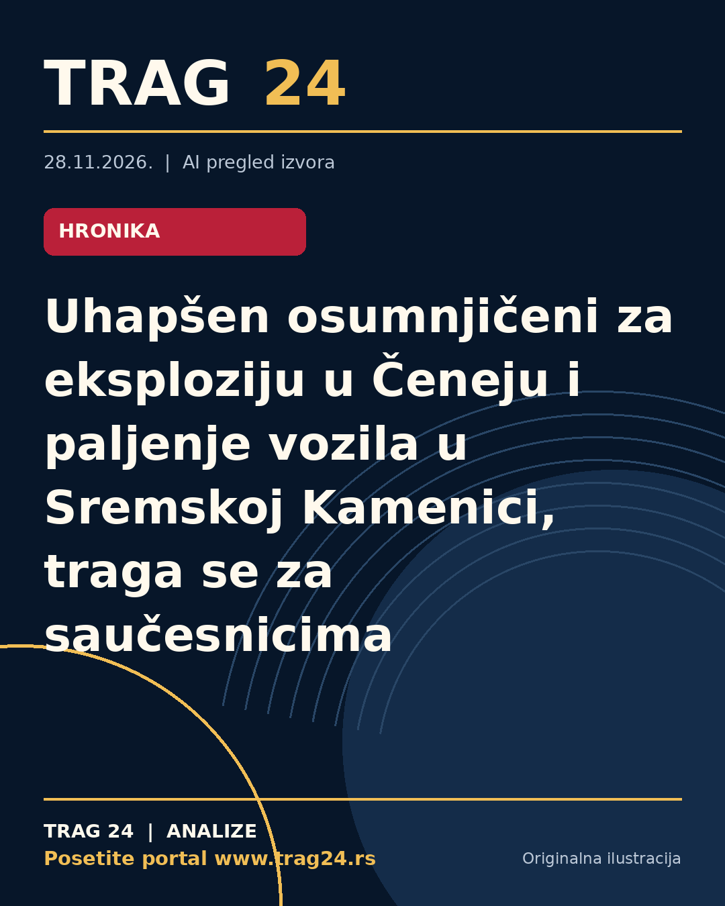

Uhapšen osumnjičeni za eksploziju u Čeneju i paljenje vozila u Sremskoj Kamenici, traga se za saučesnicima

ŠTA SE DOGODILO
Između 20. i 24. novembra na autoplacu u Sremskoj Kamenici zapaljena su dva automobila, a na kuću u Čeneju bačena je eksplozivna naprava.
HRONOLOGIJA
Dva dana nakon događaja, 26. novembra, uhapšen je V. P. Osumnjičeni je 27. novembra saslušan u tužilaštvu, nakon čega mu je pritvor određen na 30 dana od strane Višeg suda u Novom Sadu zbog opasnosti od bekstva i ponavljanja krivičnih dela.
ŠTA NAVODE IZVORI
Više javno tužilaštvo u Novom Sadu saopštilo je da osumnjičeni, zajedno sa drugim za sada nepoznatim osobama, sumnjiči za pokušaj iznude, izazivanje opšte opasnosti, kao i za nedozvoljenu proizvodnju, držanje i promet oružja i eksplozivnih materija. U saradnji sa Policijskom upravom u Novom Sadu, tužilaštvo je izvršilo uviđaje na mestima događaja, prikupilo materijalne dokaze i obaveštenja, kao i druge neophodne radnje. Takođe, traga se i za saučesnicima osumnjičenog.
ŠTA JE POTVRĐENO
Potvrđeno je hapšenje V. P. kao osumnjičenog za navedene radnje, određivanje pritvora do 30 dana, obavljanje uviđaja i prikupljanje dokaza od strane tužilaštva i policije, kao i nastavak istrage za ostale nepoznate učesnike.
ŠTA NIJE POTVRĐENO
Identitet i broj saučesnika za sada nisu poznati i nisu potvrđeni. Nema dostupnih informacija o detaljima samog događaja ili motivima iza krivičnih dela izvan saopštenja tužilaštva.
ŠTA OSTАJE OTVORENO: Dalji razvoj istrage, identifikacija i privođenje ostalih osumnjičenih, kao i pravni ishod za uhapšenog V. P.
Izvori
- https://www.danas.rs/vesti/drustvo/bomba-cenej/
- https://insajder.net/prenosimo/vise-tuzilastvo-novi-sad-uhapsen-osumnjiceni-za-paljenje-autoplaca-u-sremskoj-kamenici-i-bacanje-bombe-na-kucu-u-ceneju-traga-se-sa-saucesnicima
Ova analiza je pripremljena uz pomoć veštačke inteligencije na osnovu javno dostupnih izvora. Navodi izvora nisu nužno nezavisno potvrđeni.